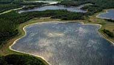

Ecology
Environment
Effects
Succession
Indicator Species
Ecoregions
|
Forest Ecology
Ecology is the study of the relationships and interactions between organisms and their natural environment. Discover why life as we know it would not be possible without forests.
 Forests are communities of many different species. Find out how they are built and who lives there.
How Forests Effect the Environment Can a forest really change the air we breathe and alter the weather systems of the entire planet ?
|
|
|
|
Forest Succession
Even though it may look the same year
after year, the natural environment is constantly evolving. Succession is the gradual and continuous process of change, life and death within the forest.
When changes occur within the forest environment they may be helpful or harmful. Learn how indicator species are used to monitor the health of the forest.
Forests are comprised of many plants and animals, each requiring specific conditions in order thrive. Travelling across the province you will notice differences in the landscape, temperature and annual rainfall. Explore Saskatchewan's eleven unique ecoregions.
|